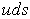
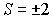
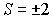
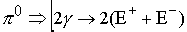
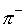

|
В. И. ЕЛИСЕЕВ ВВЕДЕНИЕ В МЕТОДЫ ТЕОРИИ
ФУНКЦИЙ ПРОСТРАНСТВЕННОГО КОМПЛЕКСНОГО ПЕРЕМЕННОГО |
|
8.4. Лептоны, Мезоны, Барионы как линейная комбинация кварков u, d.
В таблице представлены частицы, их кварковый состав, основные моды распада.
Так как кварки были увязаны с моделью лептонов, то модель любого АНДРОНА и БАРИОНА получается автоматически.
Например,
барион имеет кварковый состав . Раскроем кварковый состав по разработанной схеме,
поэтому возможна реализация двух схем распада
.
Странные мезоны
.
В точном соответствии с модой распада.
.
В точном соответствии с модой распада.
Рассмотрим схему распада очарованного
D –мезона..
Возможна реализация и другой моды распада
.
В таблице распад
-мезона зафиксирован как К плюс другие частицы.Схемы распада барионов.
.
В точном соответствии с кварковым составом.
.
В точном соответствии с кварковым составом таблицы.

Таким образом, доказано, что заряды кварков
s, c, b, t последовательно увеличивают связность пространства на единицу. Вероятностные моды распада андронов и барионов вызваны образованием в микрочастице устойчивых кварковых комбинаций внутри частицы, приводящих к образованию кварковых -туннелей, скомпенсированных по электрическому дробному заряду. Конструкция кварковых комбинаций согласована со структурой кваркового уровня и структурой андронов и барионов и модами их распада. Это четко зафиксировано модами распада, в которых нет ЛЕПТОНОВ. Образование лептонов свидетельствует о процессах преобразования в самих кварковых структурах. В этих распадах проявляется двух уровневая структура микрочастицы: кварковая и лептонная. Моды распада доказывают правильность выдвинутой структуры кваркового уровня, как последовательного увеличения связности пространства за счет скомпенсированных кварковых туннелей. Кварки S, C, b, t и так далее состоят из двух кварков U,d и их антикварков.Моды распада и заряды частиц позволяют раскрыть структуру пространства.
 Гиперон и
Гиперон и  антигиперон имеют заряд странности , что соответствует моде последовательных распадов
антигиперон имеют заряд странности , что соответствует моде последовательных распадов
 -Гиперон и
-Гиперон и  - антигиперон имеют заряд , что находится в соответствии с последовательными модами распада
- антигиперон имеют заряд , что находится в соответствии с последовательными модами распада
Таким образом, изолированное направление бариона может заполняться последовательно различными комбинациями заряда странности.
-мезоны имеют одновременно заряд странности S и очарования С. Это свидетельствует на возможность возникновения структуры сформированной одновременно из одного изолированного туннеля совместно со структурой с двумя изолированными туннелями.
Моды распада и квантовые числа частиц подтверждают рассмотренные схемы компактизации пространства, рассмотренные в главе 4 и представленные на рис 47, 48, 49, 50, 51, а также при исследовании таблицы элементов и их изотопов Д.И. Менделеева.
Модель электрона.
Согласно дробным электрическим зарядом кварков электрон в простейшем виде с зарядом равным –1 представим в двух комбинациях
Положительный электрический туннель в структуре электрона освобождается от лептонного заряда, который несет антинейтрино. Электрон имеет лептонный заряд за счет заряда электронного нейтрино.
Позитрон определяется также двумя вариантами
Отрицательный электрический туннель в структуре позитрона свободен от лептонного заряда. Позитрон заряжен антинейтрино.
Аннигиляция электрона и позитрона приводит к образованию гамма квантов
Модель электрона представлена на рис 83
При распаде нейтрального пиона образуются две пары электрон-позитронных пар

Структура изолированных направлений позитрона и электрона дает в сумме гамма квант равный
. При распаде пиона выделяются 2 гамма кванта как аннигиляция нейтрино и антинейтрино .Таким образом, реакция распада нейтрального пиона на два гамма кванта дает в результате сумму , которая в принципе является фотонным образованием (по нашему определению). Пион был выше определен как комбинация, которая отличается от результатов распада на 4 единицы уходят на энергию распада.
Рис. 83 Модель электрона.
Модель мюона.
Кварковая модель отрицательного мюона может быть установлена из процесса распада отрицательного пиона .
Известно также, что мюон распадается в дальнейшем на электрон, электронное нейтрино и антинейтрино
Модель электрона установлена из распада нейтрона, поэтому

Мюон представим также через пион.
Оба варианта эквивалентны друг другу. Заменяя кварки их выражением через электрические - лептонные комбинации получим

Модель мюонного нейтрино имеет вид
,
поэтому один электрический мюонный заряд в модели мюона теряет электронное нейтрино, а другой антинейтрино. Оба выражения эквивалентны
откуда . Один из электрических мюонных туннелей имеет скомпенсированный нейтринный туннель.В процессах распада
,
происходит изменение нейтринного уровня. Происходит распад мюонного нейтрино или антинейтрино, в результате остается скомпенсированный по лептонному заряду туннель.
Аппарат комплексной алгебры позволяет оценить структуру этого туннеля как гамма кванта, удерживаемого в структуре электрона или мюона, а также направление возможного вылета.
, так что гамма квант будет иметь действительный модуль  , и два действительных пространственных угловых направления .
, и два действительных пространственных угловых направления .
Мини оглавление:
[0], [1.1.1, 1.1.2, 1.1.3, 1.1.4, 1.1.5, 1.1.6, 1.1.7, 1.1.8, 1.2, 1.2.1, 1.2.2, 1.2.2.a, 1.2.2.b, 1.2.2.c, 1.2.2.d, 1.2.2.e, 1.2.2.f, 1.2.2.g, 1.2.2.h, 1.2.3, 1.3.1, 1.3.2, 1.3.3, 1.3.4, 1.3.5, 1.3.6, 1.4.1, 1.4.2, 1.5, 1.6, 1.7.1, 1.7.2, 1.7.3.1, 1.7.3.2, 1.7.3.3, 1.7.4.1, 1.7.4.2, 1.8.1], [2.1, 2.2],[3.1, 3.2, 3.3, 3.4.1, 3.4.2, 3.4.3, 3.4.4, 3.4.5],[4.1, 4.2, 4.3, 4.4],[5.1, 5.1.Рис.52, 5.2, 5.3, 5.4, 5.4.Т1, 5.4.Т2, 5.4.Т3, 5.5.1, 5.5.2, 5.5.3, 5.5.4],[6.1.1, 6.1.2, 6.2.1, 6.2.2, 6.2.3, 6.2.4, 6.2.5, 6.3, 6.4.1, 6.4.2, 6.5.1, 6.5.2],[7.1, 7.2, 7.3, 7.4, 7.5, 7.6, 7.7.1, 7.7.2, 7.8.1, 7.8.2, 7.8.3, 7.9],[8.1, 8.2.1, 8.2.2, 8.3, 8.4, 8.5, 8.6, 8.6.T1, 8.7, 8.8.1, 8.8.2, 8.8.3, 8.9.1, 8.9.2, 8.9.3, 8.10, 8.10.T2, 8.10.T3],[9.1, 9.2, 9.3, Рис.88, 89, 90, 91, 92, 93, 94, 95, 96, 97, 98, 99, 100],[10.1, 10.2, 10.3, 10.4, 10.5, 10.6, 10.7, 10.8, 10.9, 10.10, 10.11, 10.12, 10.13, 10.14, 10.15.1, 10.15.2, 10.16.1, 10.16.2, 10.17, 10.18],[11]
Размещенный материал является электронной версией книги: © В.И.Елисеев, "Введение в методы теории функций пространственного комплексного переменного", изданной Центром научно-технического творчества молодежи Алгоритм. - М.:, НИАТ. - 1990. Шифр Д7-90/83308. в каталоге Государственной публичной научно-технической библиотеки. Сайт действует с 10 августа 1998.
E-mail: mathsru@gmail.com